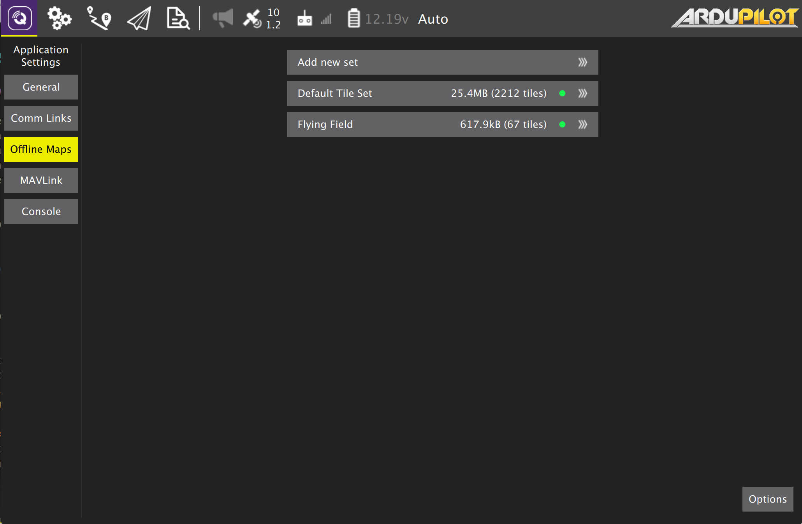
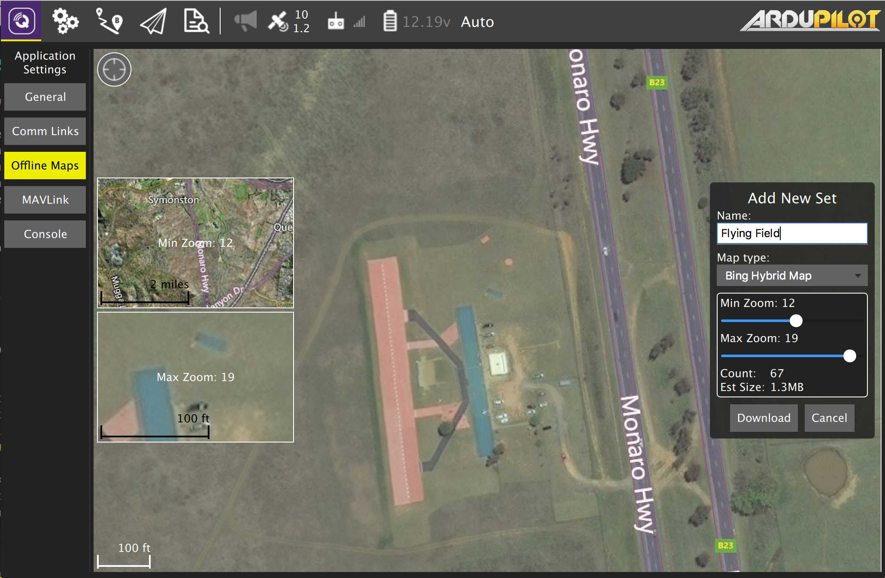

Offline Maps

Offline Maps allows you to cache map tiles for use when not connected to the internet. You can create multiple offline sets, each for a different location.
Add new set
To create a new offline map set, click "Add new set". Which will take you to this page: 
From here you can name you set as well as specify the zoom levels you want to cache. Move the map to the position you can to cache and then set the zoom levels and click Download to cache the tiles.
To the left you can see previews of the min and max zoom levels you have chosen.